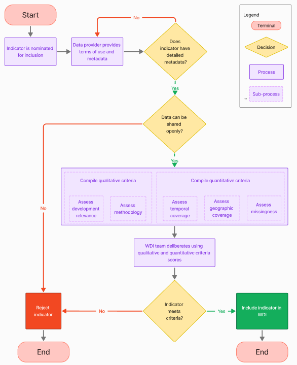

Choosing World Development Indicators: A Guide to Indicator Selection
Technical note
Abstract
The World Development Indicators (WDI) serve as a valuable resource for researchers, policymakers, and development professionals worldwide. To ensure the WDI’s indicators remain relevant and accessible, they are selected based on four fundamental criteria: ease of use, trustworthiness, coverage, and quality. This paper delineates the framework for evaluating the suitability of indicators for inclusion in the WDI, incorporating both quantitative and qualitative criteria. It also highlights specific examples of indicators under consideration for addition or retirement. The selection process is designed to ensure that the WDI continues to offer pertinent and reliable data to inform the global development discourse.
We are grateful for comments from Olivier Dupriez, Haishan Fu, Dean Jolliffe, Aart Kraay, Norman V. Loayza, Daniel Mahler, Jorge Meza, Rochelle O’Hagan, Valeria Perotti, John Pullinger, Valentina Saltane, Tea Trumbic, and Nobuo Yoshida.
Suggested citation: Welch, Matthew; Stacy, Brian; Wadhwa, Divyanshi; Serajuddin, Umar; Benschop, Thijs; Lee, Sinae; Maeda, Hiroko; Pirlea, Ana Florina. Choosing World Development Indicators: A Guide to Indicator Selection (English). Technical Note, Washington, D.C.: World Bank Group.
This note is prepared by Matthew Welch, Brian Stacy, Divyanshi Wadhwa, Umar Serajuddin, Thijs Benschop, Sinae Lee, Hiroko Maeda, Ana Florina Pirlea.
1 Introduction
The World Development Indicators (WDI) serve as a premier source for development data, widely used by governments, researchers, journalists, and the public to understand and track important development questions. Starting as a small set of tables in the annex of the 1978 World Development Report, the WDI has grown to encompass over 1,400 indicators covering 217 economies going back to 1960. In 2010, it became available as an open, online database.
The World Development Indicators (WDI) improve the utility of data by offering a dependable, comprehensive, and readily accessible collection of indicators of development. The standing of the WDI as a premier repository of developmental data is underpinned by the high quality of its underlying data sources. Drawing from a diverse array of providers, including the World Bank, national statistical offices, United Nations agencies, research institutions, academic entities, and private sector contributors, the WDI excels in amalgamating data from multiple sources. This integration facilitates seamless navigation and interaction among a wide spectrum of development topics, enhancing the user experience and research capabilities.
The WDI strives to meet the needs of different users, including, for example, economists, public health specialists, environment specialists and others. Maintaining the WDI’s reputation as a premier source of data requires that the WDI offers a broad high quality and relevant set of indicators for the community that uses them. This document aims to provide clarity to users on what standards are used to include (or to occasionally remove) indicators in the WDI.1
Traditionally, the World Development Indicators (WDI) have been assessed, by the WDI Team, using a set of dimensions that are widely recognized in global statistical frameworks. Fantom and Khokhar (2014) encapsulated these dimensions as relevance, openness, accuracy, comparability, and coverage. Historically, these criteria have been effective for WDI, but they had not been organized into a detailed framework that allows for a quantifiable and structured choice and evaluation process. In response, the WDI team has introduced a revised framework, inspired by Jolliffe et al. (2023) and the 2021 World Development Report: Data for Better Lives and aligned with the principles outlined in the World Bank Development Data Quality Policy.2 This new framework introduces four pivotal conditions for data utility in development contexts: ease of use, safety, comprehensive coverage, and high quality. The original dimensions of relevance, openness, accuracy, comparability, and coverage are now integrated into this new framework, along with several added criteria.
The aim of this updated framework is to refine the WDI indicator selection process, ensuring it is both methodically structured and in harmony with established statistical principles and contemporary best practices. The revised framework introduces a set of metrics designed to evaluate and select indicators for the World Development Indicators (WDI). Certain metrics are quantifiable, such as the number of countries covered or the time span of data availability. Other metrics, like the quality of an indicator and its relevance to development, require qualitative assessment. The inclusion or exclusion of an indicator in the WDI hinges on a balanced consideration of these quantitative and qualitative metrics and the trade-offs they present. To provide transparency in our indicator selection process, these criteria are made available to the public on the WDI website.
2 Framework for Assessing Indicators
Several international organizations and national statistical offices have produced data quality frameworks to ensure the availability of high-quality and relevant data for users. For example, the UK Office for National Statistics released A Government Data Quality Framework (UK ONS 2020) based on five principles: commit to data quality, understand user needs, assess quality throughout the data lifecycle, communicate data quality clearly and effectively, and anticipate changes affecting data quality. These principles are broadly consistent with other frameworks such as Eurostat (2017), the United Nations (2019), Statistics Canada (2017), the OECD (Organisation for Economic Cooperation and Development) (2011), Biemer (2010), and Jolliffe et al. (2023) (see Table A1 for a comparison of these frameworks).
The frameworks for data governance are divided into two distinct categories: one that provides guidelines for data producers to ensure the creation of high-quality outputs, and another that delineates the responsibilities of data providers to guarantee user access to data and metadata that satisfy their needs.3 This note focuses on the latter, underscoring the importance of meeting user data requirements. In shaping the criteria for the World Development Indicators, a comprehensive set of factors was considered, including relevance, accuracy, coherence, clarity, comparability, completeness, confidentiality, timeliness, accessibility, and the extent of detail. These criteria are integral to ensuring that the data is not only of high quality and user-friendly but also come from a trusted source, have development relevance, and characterized by high geographical coverage. This framework for the WDI is presented in Table 1.4 To be considered a good fit for inclusion in the WDI, an indicator should perform well across all four dimensions.
| Area | Dimension | Definition |
|---|---|---|
| Easy to Use | Accessible | Data is machine-readable and openly licensed, facilitating ease of access for users. |
| Understandable | Data is accompanied by clear metadata, enhancing user comprehension. | |
| Interoperable | Data can be easily integrated with other datasets via common identifiers and standards. | |
| Trusted & Relevant | Impartial | Data is unbiased, free from stakeholder influence that could compromise its integrity. |
| Confidentiality Protected | Sensitive and personal data is securely protected against unauthorized access. | |
| Development Relevance | Data aligns with and supports internationally adopted development goals, priorities, and frameworks. | |
| Adequate Coverage | Complete | Data comprehensively represents the target population or area of interest. |
| Frequent | Data updates occur at frequent intervals, reflecting the dynamic nature of the information. | |
| Timely | Data is made available promptly following its collection or the occurrence of relevant events. | |
| High Quality | Accurate | Data is precise, capturing the intended concepts with minimal error. |
| Comparable | Data maintains consistency with standards, enabling comparison across geography and time. | |
| Granular | Data is sufficiently detailed, allowing for disaggregation where appropriate or necessary. | |
| Not Redundant | Data is unique and does not duplicate other available data, ensuring efficiency and clarity. |
This structured approach ensures that indicators selected for the WDI are not only high in quality but also practical, reliable, and relevant for users’ needs.
The framework outlined in Table 1 outlines the set of desired attributes for data to be fit for inclusion in the WDI. However, measuring whether an indicator meets all these criteria in practice can be challenging, as some attributes like impartiality or development relevance are difficult to pin down or specify unambiguously.
Table 2 presents a set of commonly available metrics that can serve as useful proxies to assess various aspects of the framework empirically. While these metrics do not capture the full extent of the framework, they provide a starting point for benchmarking key data attributes like coverage, timeliness, accessibility, and granularity. It is important to interpret these metrics as indicative rather than conclusive measures of whether an indicator meets the standards laid out in the conceptual framework.
| Area | Qualitative Metrics | Quantitative Metrics |
|---|---|---|
| Easy to Use | Data is produced using transparent and clear methodology. Metadata is comprehensive and readily accessible. | Availability of an open license. |
| Trusted & Relevant | Data aligns with and informs global development goals, such as the UN Sustainable Development Goals, World Bank objectives, and sector-specific priorities. Data production ensures confidentiality and impartiality. Data is sourced from reputable, established sources. | Engagement metrics, such as the number of unique visitors and frequency of citations. |
| Adequate Coverage | Data values are regularly updated and are expected to continue being updated. Data includes relevant subgroup details for comprehensive analysis. | Coverage metrics, including the number of economies covered, the proportion of low- and middle-income economies, the range of years data spans, the most recent year data is available, and the presence of non-missing data points. |
| High Quality | Data complies with domain-relevant international standards, when relevant, measures of accuracy or precision are considered. Consistency in methodology over time, ensuring comparability. Data is unique and does not duplicate other available data, ensuring efficiency and clarity. |
While it is uncommon for indicators to meet all the criteria completely, the World Development Indicators (WDI) team utilizes a scoring system to initially gauge an indicator’s suitability. This system quantitatively assesses each indicator against the established criteria, providing a preliminary measure of its appropriateness for inclusion. However, this is just the first step. The team also carefully considers additional qualitative factors—those that are not as easily measured—to ensure a well-rounded evaluation. Together, these quantitative scores and qualitative assessments form a robust framework for deciding on the inclusion or exclusion of indicators in the WDI.5
2.1 Quantitative Criteria for Inclusion
Easy to Use
- Metadata Availability: Does the indicator include essential metadata? This encompasses a clear indicator name, description, definition, relevance to development, measurement units, statistical concepts, methodology, aggregation method, and data sources, as specified in annex Table A2.
- Open License: Is the data distributed under an open license, such as CC BY 4.0?
Trusted & Relevant
- User Metrics: What is the user interaction with the data over a year, including searches, browsing, downloads, or citations?
Adequate Coverage
- Number of Economies: For how many economies is data available for the indicator?
- Percent of Low- and Middle-Income Economies: What is the percentage of data coverage for low- and middle-income economies (LMICs), which are a focus of the World Bank’s mission?
- Span of Years: What is the range of years for which data is available, and how many years does this span cover, as determined by the difference between the earliest and latest years with available data?
- Timeliness of Data: What is the timeliness of the data? This is measured using two metrics:
- Absolute Most Recent Year: What is the latest year for which the indicator’s data is available across any economy?
- Median Most Recent Year: Across economies, what is the median of the most recent year of data available.
- Periodicity of the Data: How often are values in the time series available? This metric (non-missing data, share) evaluates the proportion of available data within the time span and country coverage previously calculated for the indicator, not the span and coverage of the WDI itself.
2.2 Qualitative Criteria for Inclusion
Evaluating the quality, relevance, accuracy, and suitability of a data source for inclusion in the WDI involves a careful and nuanced assessment of several factors. While quantitative criteria can be objectively measured, qualitative aspects often require the judgment of the WDI team. The World Development Indicators (WDI) team employs a qualitative assessment process that leverages the collective expertise of its members and the broader knowledge base within the World Bank. This process includes a thorough evaluation of several key factors:
Data Provider’s Reputation and Credibility: The team scrutinizes the standing and reliability of the data source, ensuring that the provider is recognized for their integrity and the quality of their data. The team may consult with sector specialists at the World Bank.
Methodological Transparency and Robustness: The team examines the clarity and strength of the data collection process, and the methodologies applied, affirming that these practices meet high standards of transparency and robustness. Again, this may involve a consultation with sector specialists at the World Bank or an examination of published reviews.
Alignment with Development Frameworks: The data is evaluated for its consistency with globally recognized development frameworks, such as the Sustainable Development Goals (SDGs), the World Bank’s mission and corporate objectives, and sector-specific goals and priorities, including those related to climate agreements.
Not Redundant: Data is unique and does not duplicate other data already included on the WDI, ensuring efficiency and clarity.
This qualitative assessment is underpinned by extensive background research and thoughtful discussions among WDI team members and World Bank domain experts. The evaluation capitalizes on their deep expertise and nuanced understanding of how indicators can be utilized effectively in various development contexts.
Moreover, the WDI team assesses the impartiality and suitability of the data to ensure it is free from bias and appropriate for its intended analytical purposes. The quality of the metadata is also a critical consideration, as it enhances the data’s utility and interpretability. This comprehensive approach ensures that the data curated for the WDI is not only of high quality but also ethically sourced and relevant to the Bank’s mission and the needs of its stakeholders.
The World Bank’s World Development Indicators (WDI) team employs a framework that incorporates both quantitative and qualitative criteria to ensure the selection of the most appropriate indicators. The quantitative criteria provide objective measures of the data’s accessibility, timeliness, and coverage, offering a clear view of its practical utility. The qualitative criteria, on the other hand, assess the data’s relevance, accuracy, and reliability, ensuring that it aligns with the World Bank’s mission and the broader development agenda. By integrating these criteria, the WDI team can make informed decisions, selecting indicators that best support the needs of World Bank clients and staff, researchers, policymakers, and development practitioners across the globe.
3 Monitoring Existing WDI Indicatorors
The World Development Indicators (WDI) undergo a systematic review process to maintain their relevance and appropriateness. This section details the quantitative benchmarks that form the cornerstone of this evaluation and describes their application in the assessment process.
As a benchmark, Table 3 provides an overview of the quantitative metrics for the April 2024 vintage of the WDI. The selected groups correspond to the 1st, 2nd, 5th, 10th, and 50th percentiles among existing WDI indicators.
| Metric | Bottom (1st) Percentile | 2nd Percentile | 5th Percentile | 10th Percentile | 50th Percentile |
|---|---|---|---|---|---|
| Number of economies | 30 | 50 | 80 | 100 | 180 |
| Percent of low- and middle-income economies | 10 | 30 | 40 | 65 | 90 |
| Span of years | 3 | 6 | 10 | 15 | 50 |
| Absolute latest year | 2012 | 2013 | 2015 | 2018 | 2021 |
The World Development Indicators (WDI) team flags indicators that rank in the lower percentiles across various metrics for an in-depth review and consultation among experts in the World Bank. This step is crucial as it triggers a rigorous qualitative evaluation to decide whether an indicator should be retained. During this evaluation, the team carefully analyzes the indicator’s methodology, data sources, and its congruence with essential development objectives. An indicator’s failure to meet one or more quantitative benchmarks does not lead to its automatic exclusion. Instead, the WDI team considers the unique contributions and insights an indicator may provide, balancing its quantitative scores against its potential qualitative value. To justify keeping an indicator, a compelling argument must be presented, either by underscoring its outstanding relevance to key issues or by proposing a practical strategy for enhancing its quality, such as through better data collection practices, methodological refinements, or partnerships with data providers.
The World Development Indicators (WDI) team applies a more streamlined review process for indicators that perform above the median in all categories, particularly when they exhibit outstanding performance across multiple metrics. Nonetheless, the team maintains a proactive stance in overseeing these indicators, staying alert to any potential qualitative issues that may arise. This includes being attentive to changes in data collection methods, updates in methodological approaches, or shifts in development priorities that could affect the indicator’s pertinence. To guarantee that the qualitative standards for these indicators are maintained at the highest level, the WDI team regularly engages with domain experts and key stakeholders for their insights and updates.
| Indicator | Number of Economies | Percent of Low- and Middle-Income Economies | Span of Years | Absolute Latest Year | Median Latest Year | Non-Missing Data, Share | Unique Visitors (Last 12 Months) |
|---|---|---|---|---|---|---|---|
| Mortality rate, infant (per 1,000 live births) | 1961 | 1005 | 625 | 20215 | 20215 | 915 | 80,5915 |
| Female genital mutilation prevalence (%) | 301 | 22.42 | 334 | 20225 | 20184 | 9.21 | 8,5915 |
- Bottom percentile. 2. Above 2nd Percentile. 3. Above 5th Percentile. 4. Above 10th Percentile. 5. Above 50th Percentile.
The World Development Indicators (WDI) feature a diverse range of indicators, such as infant mortality rates (mortality rate for children under age 5) and Female Genital Mutilation (FGM). Infant mortality rate data covers 196 economies over 62 years, while FGM data is scarcer, reported for only thirty economies across 33 years. The limited availability of FGM data is due to the infrequent nature of household surveys collecting such information leading to a substantial amount of missing data. Nevertheless, the severity of FGM as a human rights issue calls for its inclusion in the WDI. The dissemination of reliable data is vital for supporting the eradication of violence against women and girls, and therefore, despite the gaps, the FGM indicator is included in the WDI to aid in these critical efforts.
4 Adding New Indicators
The evaluation of new indicators for inclusion in the World Development Indicators (WDI) is governed by similar criteria to those used for existing indicators. Figure 1 illustrates the decision-making pathway for considering new indicators. Nominations for the WDI typically originate from the demands of World Bank staff or partner organizations. Additionally, the WDI team proactively nominates indicators to meet specific user requirements, ensuring that the suite of indicators stays comprehensive and aligned with the dynamic needs of development data users.
The initiation of an indicator’s inclusion in the World Development Indicators (WDI) involves an extensive compilation of its background information. Since the WDI is freely accessible, it is essential to source data from providers that allow its redistribution and open use. The first step is to verify that the data meets the open data standards of the WDI. The presence of comprehensive metadata is a non-negotiable aspect of the process, as it underpins the indicator’s credibility and practicality. For example, without a well-defined methodology or unit of measurement, it would be challenging for users to ascertain the indicator’s relevance to their research or policy needs. The World Bank’s metadata schema specifies a series of mandatory fields that must be completed before an indicator can be published, which are detailed in annex Table A2. If an indicator is nominated without the necessary license information or key metadata, the nomination is paused until these details are provided.
Figure 4.1 WDI Criteria Decision Making Process

The process of evaluating new data for inclusion in the World Development Indicators (WDI) begins with an assessment of its developmental relevance. This step determines if the data complements the existing indicators or addresses a gap in an emerging or underrepresented development area. It also involves evaluating the data’s alignment with the World Bank’s strategic goals, sector-specific priorities, or more recently, with the UN Sustainable Development Goals (SDGs). Subsequently, the indicator’s geographic and temporal coverage is examined, often benchmarked against existing WDI indicators as shown in Table 3. The final evaluation stage is the quality assessment of the indicator, which includes consulting with subject matter experts to verify its methodological rigor. Indicators released by authoritative organizations such as the World Bank, IMF, or other UN agencies are presumed to have robust quality control processes in place.
5 Applications of the WDI Criteria
We provide a few examples to show how the criteria have been applied to some recent additions to the WDI indicators. We also provide the example of a decision to remove an indicator.
The first is the Learning Poverty indicator jointly produced by the World Bank and UNESCO UIS. Learning Poverty measures the share of 10-year-olds who are below the minimum proficiency level (MPL) for reading (cannot read and understand a short passage of age-appropriate material). This indicator is updated regularly, but covers 123 economies, placing it below the median for country coverage in the WDI (see Table 3). While it is not a top performer on the country coverage metric, its inclusion in the World Bank Corporate Scorecard and relevance to the Sustainable Development Goals makes it a critical indicator with substantial user benefit. The data is available with an open license, is well documented, and follows a sound methodology. Moreover, it is a newly created indicator. Given these considerations, the WDI team made the decision to include it in the WDI.
Two indicators that were recently retired from the WDI are the Doing Business indicators and the Statistical Capacity Indicators (SCI). In the case of the Doing Business indicators, the project to collect the indicators was stopped in 2021 and replaced by the Business Ready indicators. The old Doing Business indicators will be available as part of the WDI archives. The Statistical Capacity Indicator (SCI) has been replaced by the Statistical Performance Indicators (SPI), which provide an updated framework for measuring statistical performance. Data will no longer be collected for the SCI and has therefore been retired and archived.
| Indicator | Economies Covered | Time Span | Open License | Trusted Methodology | Regular Updates |
|---|---|---|---|---|---|
| Learning Poverty | 123 | 2000-2019 | Yes | Yes | Yes |
| Doing Business (Ease of Doing Business Index) | 189 | 2004-2020 | Yes | Data irregularities reported | Discontinued |
| Statistical Capacity Indicator (SCI) | 150 | 2004-2020 | Yes | Replaced by SPI | Discontinued |
6 Conclusion
The World Development Indicators (WDI) is an essential resource for researchers, policymakers, and development professionals around the world. To ensure its continued relevance and ease of access, the WDI employs a stringent evaluation framework for potential indicators, focusing on four pivotal criteria: ease of use, trustworthiness, adequate coverage, and high quality. This document has outlined the framework for assessing the suitability of indicators, detailed both quantitative and qualitative evaluation criteria, and discussed examples of potential new indicators as well as those under consideration for discontinuation. By strictly adhering to these evaluative processes, the WDI ensures it remains a trusted source of robust data, crucial for shaping effective development policies and promoting global progress.
References
- Biemer, Paul P. 2010. “Total Survey Error: Design, Implementation, and Evaluation.” Public Opinion Quarterly 74 (5): 817—848.
- European Statistics Code of Practice. 2017. European Statistics Code of Practice for the National Statistical Authorities and Eurostat (EU statistical authority). European Union. Available at: https://ec.europa.eu/eurostat/web/quality/european-quality-standards/european-statistics-code-of-practice
- Fantom, Neil and Khokhar, Tariq. “How we do Open Data: #1 - choosing development indicators” (2014). World Bank Data Blog. Available at: https://blogs.worldbank.org/opendata/how-we-do-open-data-choosing-development-indicators
- Jolliffe, Dean, Daniel Gerszon Mahler, Malarvizhi Veerappan, Talip Kilic, and Philip Wollburg. “What Makes Public Sector Data Valuable for Development?.” The World Bank Research Observer 38, no. 2 (2023): 325-346.
- Mahler, Daniel Gerszon, Umar Serajuddin, and Hiroko Maeda. “When is there enough data to create a global statistic?.” Statistical Journal of the IAOS 39, no. 2 (2023): 447-457.
- Office of National Statistics (ONS). The Government Data Quality Framework. UK government publications, December 3, 2020. Available at: https://www.gov.uk/government/publications/the-government-data-quality-framework
- Open Knowledge Foundation. “The Open Definition.” Open Definition. Last modified April 2, 2015. Available at: https://opendefinition.org/
- Statistics Canada. 2017. Data quality toolkit, release data September 27. Available at: https://www.statcan.gc.ca/eng/data-quality-toolkit
- World Bank. 2021. World Development Report 2021: Data for Better Lives. Washington DC: World Bank. Available at: https://doi.org/10.1596/978-1-4648-1600-0
- World Bank. World development indicators 2023. The World Bank, April 2023.
- World Bank. (forthcoming). Data Quality Policy. The World Bank.
- UN. 2019. “United Nations National Quality Assurance Frameworks Manual for Official Statistics.” Available at: https://unstats.un.org/unsd/methodology/dataquality/un-nqaf-manual/#UN-NQAF-Manual
Annex
| Area | WDI Framework (2024) | Fantom & Khokhar (2014) | Joliffe et al. (2021) | Statistics Canada (2017) | OECD (2011) | UN (2019) | Biemer (2010) |
|---|---|---|---|---|---|---|---|
| Adequate Coverage | Complete | Completeness | Complete | Coverage | Completeness | ||
| Frequent | Frequent | Viability | |||||
| Timely | Timeliness | Timely | Timeliness & punctuality | Timeliness& punctuality | Timeliness & punctuality | Timeliness/ punctuality | |
| High Quality | Granular | Extent of detail | Granular | Granularity | |||
| Accurate | Accuracy | Accurate | Accuracy & reliability | Accuracy, reliability | Accuracy & reliability; Methodological soundness | Accuracy | |
| Comparable | Comparability | Comparable | Standardization or conformance | Comparability | Comparability | ||
| Not Redundant | |||||||
| Easy to Use | Accessible | Accessibility | Accessible | Accessibility | Openness/ transparency | Accessibility | Accessibility |
| Understandable | Clarity | Understandable | Processability and understandability | Clarity; Transparency | Usability/ interpretability | ||
| Interoperable | Coherence | Interoperable | Combinability or likability | Coherence | Coherence | Coherence | |
| Trusted & Relevant | Impartial | Plausibility | Impartial | Perception of authority, impartiality & trustworthiness | Credibility; objectivity; integrity; impartiality | Impartiality & objectivity | Credibility |
| Confidentiality protected | Confidentiality | Confidential | Security. Protection of sensitive information | Confidentiality protected | Statistical confidentiality & data security | ||
| Development Relevance | Relevance | Appropriate | Relevance & usefulness | Relevance & usefulness | Relevance | Relevance | |
| Other | Quality assurance; reproducibility; contact ability | Effective stakeholder engagement | Many, see table note |
Note: This figure is inspired by, and takes some information from, Jolliffe et al. (2023) & Marker (2017). The UN framework has many other attributes most of which are related to managing the statistical system and hence do not relate to the framework of this paper: Coordinating the national statistical system, managing relationships, managing statistical standards, professional independence, adequacy of resources, commitment to quality, appropriate statistical procedures, managing the respondent burden, and cost-effectiveness.
| Field | Definition |
|---|---|
| Definition | Detailed definition of the indicator. |
| Definition references | Links/sources for the definition. |
| Development Relevance | Development relevance and importance of the indicator. |
| Methodology | Methodology used to calculate/derive the indicator. |
| Statistical concept | Statistical concepts and standards applied. |
| Measurement unit | Unit of measurement for the indicator. |
| Aggregation method | Method for aggregating the indicator across geographic levels. |
| Sources | Data sources used to compile the indicator. |
| Aliases | Different names/aliases for the indicator separated by semicolons. |
| Alternate Identifiers | Any other identifiers used for the indicator in source databases. |
| Area | Dimension | Data Quality Policy Principle |
|---|---|---|
| Easy to Use | Accessible | Access, Dissemination, and Storage (h) |
| Understandable | Transparency (d) | |
| Interoperable | Inter-operability (l) | |
| Trusted & Relevant | Impartial | Impartiality and Independence (a) |
| Confidentiality Protected | Responsible Data Management (b) | |
| Development Relevance | Relevance (e) | |
| Adequate Coverage | Complete | Efficient Data Collection (i) |
| Frequent | Efficient Data Collection (i) | |
| Timely | Access, Dissemination, and Storage (h) | |
| High Quality | Accurate | Verifiability (c) |
| Comparable | Coherence and Comparability (f) | |
| Granular | Coherence and Comparability (f) | |
| Not Redundant | Coherence and Comparability (f) |
Footnotes
Removed indicators can be accessed at the WDI archives .↩︎
A mapping between the WDI criteria framework and the World Bank Development Data Quality Policy is available in Annex Table A3.↩︎
The World Bank’s Policy on Development Data Quality covers the policy for data producers at the World Bank to maintain high-quality products.↩︎
“Trusted & Relevant” was used in place of “safe to use,” because “safe to use,” as expressed in Jolliffe et al. (2023), covered data other than the cross-country time series data found in the WDI, for instance survey data. For survey data, issues such as confidentiality are much more relevant than is the case of the WDI, which is based on country level data.↩︎
For example, while adequate global coverage is good as an overall principle there are situations where issues are only encountered in certain regions and where monitoring and policy is a high priority. Additionally, new series may only have one or few years of data.↩︎